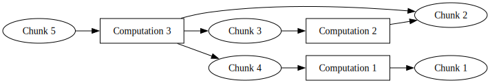
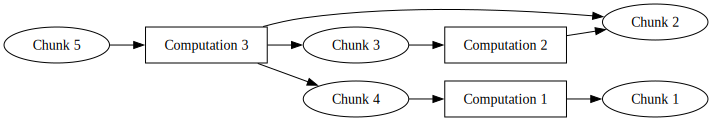

Introduction
Key Concepts & Definitions
- Large Scale
- Statistical Algorithm
- Chunks, Persistence, Emergence
- Concurrent, Parallel, Space, Time, Local, Remote
Prior Art
Platforms
 Packages
Packages


SNOW (parallel)
Constructive Requirements
Experimentation
Furthest Iteration
Usage
Implementation
 
